library(tidyverse);library(phyloseq); library(decontam)
library(compositions); library(patchwork);
library(ggupset); library(gt)
library(plotly); library(viridis); library(vegan)Northern Gulf
1 Set up R environment
Set up R & import starting data
load(file = "input-data/gulf-2023-sequence-analysis_11192025.RData", verbose = TRUE)Loading objects:
asv_long_cleaned_wenv
asv_long_cleaned_wenv_mod
asv_long_wenv_wtax
tax_key
asv_long_avg_wtax
env_metadata_modstn_info <- read.csv("input-data/manual_stn_classification.csv")#offshore_on_shore_order <- c("S1", "S2", "S3", "S4", "S5","S9", "S8", "S7", "S11", "S12", "S14", "S15")
head(env_metadata_mod)# A tibble: 6 × 16
Station Niskin Depth Latitude Longitude Pressure Date Time_UTC ENV_VARIABLE
<int> <int> <dbl> <dbl> <dbl> <dbl> <chr> <chr> <chr>
1 1 1 46.5 28.8 89.5 46.9 7/30/23 18:56:28 NH4
2 1 1 46.5 28.8 89.5 46.9 7/30/23 18:56:28 NO2
3 1 1 46.5 28.8 89.5 46.9 7/30/23 18:56:28 NO3
4 1 1 46.5 28.8 89.5 46.9 7/30/23 18:56:28 Oxygen
5 1 1 46.5 28.8 89.5 46.9 7/30/23 18:56:28 PO4
6 1 1 46.5 28.8 89.5 46.9 7/30/23 18:56:28 SIL
# ℹ 7 more variables: value <dbl>, FEATURE <chr>, Transect <int>,
# STN_CATEGORY_3 <chr>, STN_CATEGORY_4 <chr>, PROX_TOSHORE <int>,
# DEPTH_MAX <dbl>head(asv_long_wenv_wtax)# A tibble: 6 × 51
FeatureID Taxon Domain Supergroup Division Subdivision Class Order Family
<chr> <chr> <chr> <chr> <chr> <chr> <chr> <chr> <chr>
1 5bf3b429509ca… Euka… Eukar… Obazoa Opistho… Metazoa Arth… Crus… Maxil…
2 5bf3b429509ca… Euka… Eukar… Obazoa Opistho… Metazoa Arth… Crus… Maxil…
3 5bf3b429509ca… Euka… Eukar… Obazoa Opistho… Metazoa Arth… Crus… Maxil…
4 5bf3b429509ca… Euka… Eukar… Obazoa Opistho… Metazoa Arth… Crus… Maxil…
5 5bf3b429509ca… Euka… Eukar… Obazoa Opistho… Metazoa Arth… Crus… Maxil…
6 5bf3b429509ca… Euka… Eukar… Obazoa Opistho… Metazoa Arth… Crus… Maxil…
# ℹ 42 more variables: Genus <chr>, Species <chr>, STN_NISKIN <chr>,
# SEQUENCE_COUNT <dbl>, Station <int>, Niskin <int>, Depth <dbl>,
# Latitude <dbl>, Longitude <dbl>, Pressure <dbl>, Date <chr>,
# Time_UTC <chr>, NH4 <dbl>, NO2 <dbl>, NO3 <dbl>, Oxygen <dbl>, PO4 <dbl>,
# SIL <dbl>, Salinity <dbl>, Temperature <dbl>, Prok_count <dbl>,
# DATE_GMT <date>, TIME_GMT <chr>, datetime_cst <dttm>, SUNRISE <dttm>,
# SUNSET <dttm>, DAY_NIGHT <chr>, HR_OF_DAY <int>, Transect <int>, …# unique(asv_long_wenv_wtax$Station)
stns_in_study <- as.character(unique(asv_long_wenv_wtax$Station))1.1 CTD data import
master_metadata <- read.csv("input-data/grad23_master.csv",
header = TRUE,
check.names = FALSE, na.strings = "--")2 Marine Heat Wave?
Siddarth
3 Discharge at the MS River
Siddarth
4 Temperature-Salinity plots
T-S plot with all stations, and depths above the DCM? above the O2 min layer?
# master_metadata %>%
# select(Station, Niskin, DEPTH = `CTD Recorded Depth (m)`, TEMP = `CTD Temperature`, SALINITY = `Corrected CTD Salinity`, PRESSURE = `CTD Pressure (db)`,
# LONG = `NMEA Longitude`, LAT = `NMEA Latitude`)5 Brunt-Väisälä frequency
Measure of stability within a sampled vertical profile. Use the formula N = √(g/ρ) (∂ρ/∂z) g = gravity 9.8 m/s^2 ρ = density z = depth
Calculate MLD, would add this to my parameters for DCM and more.
# install.packages("gsw")
library(gsw)
# ?gsw_Nsquared()# colnames(master_metadata)
by_freq <- master_metadata %>%
select(Station, Niskin, DEPTH = `CTD Recorded Depth (m)`, TEMP = `CTD Temperature`, SALINITY = `Corrected CTD Salinity`, PRESSURE = `CTD Pressure (db)`,
LONG = `NMEA Longitude`, LAT = `NMEA Latitude`) %>%
filter(Station != 63) %>%
mutate(STN_NISKIN = as.character(paste("S", Station, "_N", Niskin, sep = ""))) %>%
filter(STN_NISKIN != "S12_N10") %>%
drop_na() %>%
column_to_rownames(var = "STN_NISKIN")
head(by_freq) Station Niskin DEPTH TEMP SALINITY PRESSURE LONG LAT
S1_N1 1 1 46.535 24.777 35.287 46.854 89.46 28.849
S1_N2 1 2 46.312 24.610 35.277 46.629 89.46 28.849
S1_N3 1 3 46.303 24.349 35.463 46.621 89.46 28.849
S1_N4 1 4 46.453 24.141 35.578 46.771 89.46 28.849
S1_N5 1 5 18.603 24.227 36.253 18.729 89.46 28.849
S1_N6 1 6 18.707 24.300 36.250 18.834 89.46 28.849bv_output <- by_freq %>%
group_by(Station, DEPTH) %>%
reframe(bv_out = gsw_Nsquared(by_freq$SALINITY,
by_freq$TEMP,
by_freq$PRESSURE,
by_freq$LAT)) %>%
mutate(BV_INDIC = names(bv_out)) %>%
unnest(bv_out) %>%
pivot_wider(names_from = BV_INDIC, values_from = bv_out)Warning: Values from `bv_out` are not uniquely identified; output will contain
list-cols.
• Use `values_fn = list` to suppress this warning.
• Use `values_fn = {summary_fun}` to summarise duplicates.
• Use the following dplyr code to identify duplicates.
{data} |>
dplyr::summarise(n = dplyr::n(), .by = c(Station, DEPTH, BV_INDIC)) |>
dplyr::filter(n > 1L)# head(tmp)
# unique(tmp$BV_INDIC)
# ?gsw_Nsquared()
# bind_cols(data.frame(gsw_Nsquared(by_freq$SALINITY,
# by_freq$TEMP,
# by_freq$PRESSURE,
# by_freq$LAT)))Interpret B-V frequency to determine Mixed Layer Depth.
Goal: what water masses are influencing key stations where I see diversity-based edge effects? specific taxa?
6 Calculate distance from MS River plume
This would replace additional parameters, would test for other key factors.
7 Map
7.1 Extract lat long from data
Fxn for ther surface params, lat, long
Set up a data frame with all parameters as columns.
head(env_metadata_mod)# A tibble: 6 × 16
Station Niskin Depth Latitude Longitude Pressure Date Time_UTC ENV_VARIABLE
<int> <int> <dbl> <dbl> <dbl> <dbl> <chr> <chr> <chr>
1 1 1 46.5 28.8 89.5 46.9 7/30/23 18:56:28 NH4
2 1 1 46.5 28.8 89.5 46.9 7/30/23 18:56:28 NO2
3 1 1 46.5 28.8 89.5 46.9 7/30/23 18:56:28 NO3
4 1 1 46.5 28.8 89.5 46.9 7/30/23 18:56:28 Oxygen
5 1 1 46.5 28.8 89.5 46.9 7/30/23 18:56:28 PO4
6 1 1 46.5 28.8 89.5 46.9 7/30/23 18:56:28 SIL
# ℹ 7 more variables: value <dbl>, FEATURE <chr>, Transect <int>,
# STN_CATEGORY_3 <chr>, STN_CATEGORY_4 <chr>, PROX_TOSHORE <int>,
# DEPTH_MAX <dbl>stn_labels <- env_metadata_mod %>%
ungroup() %>%
filter(Station %in% stns_in_study) %>%
select(Station, Latitude, Longitude, Depth) %>% distinct()
surface_labels <- stn_labels %>%
filter(Depth < 5) %>%
select(Station, Latitude, Longitude) %>% distinct()7.2 Get map params
# install.packages("Rcpp")
# install.packages(c("googleway", "ggrepel",
# "ggspatial", "libwgeom", "sf", "rnaturalearth", "rnaturalearthdata"))
library(rnaturalearth)
library(rnaturalearthdata)
Attaching package: 'rnaturalearthdata'The following object is masked from 'package:rnaturalearth':
countries110library(sf)Linking to GEOS 3.13.0, GDAL 3.8.5, PROJ 9.5.1; sf_use_s2() is TRUEworld <- ne_countries(scale='medium',returnclass = 'sf')
class(world)[1] "sf" "data.frame"7.3 Map of whole Gulf region
ggulf <- ggplot(data = world) +
geom_sf(aes(fill = region_wb)) +
annotate(geom = "text", x = -90, y = 26, label = "",
fontface = "italic", color = "grey22", size = 6) +
coord_sf(xlim = c(-102.15, -74.12), ylim = c(7.65, 33.97), expand = FALSE) +
scale_fill_viridis_d(option = "plasma") +
theme(legend.position = "none", axis.title.x = element_blank(),
axis.title.y = element_blank(), panel.background = element_rect(fill = "azure"),
panel.border = element_rect(fill = NA))
ggulf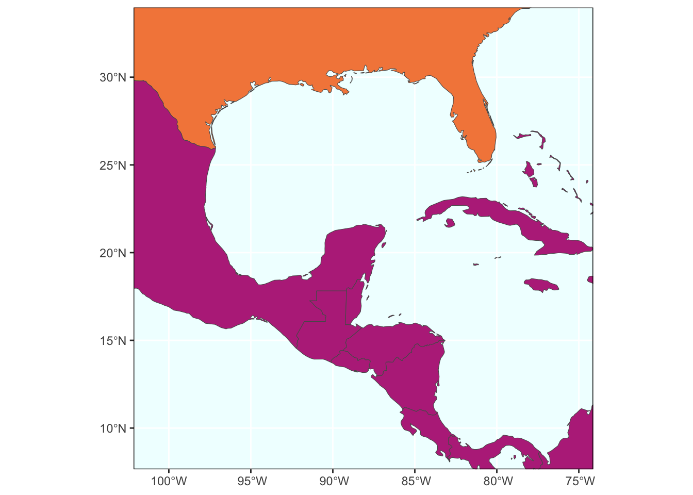
# MAP
LARGE <- ggplot(data = world) +
geom_sf(color = "black", linewidth = 0.6, fill = "grey10", alpha = 0.8) +
# Set lat long region to show:
# coord_sf(xlim = c(-90, -86.5), ylim = c(27.5, 30), expand = FALSE) + # Region of study
coord_sf(xlim = c(-110, -70), ylim = c(5, 45), expand = FALSE) + # Larger region
# Add data points for stations
# geom_point(data = surface_odv, aes(x = Longitude, y = Latitude)) +
geom_rect(xmin = -90, xmax = -86.5, ymin = 27.5, ymax = 30, fill = NA, color = "grey10", alpha = 0.9) + #inset
labs(y = "Latitude (°N)", x = "Longitude (°W)") +
scale_x_reverse() +
theme_classic() +
theme(legend.position = "none",
axis.text = element_text(size = 8, colour="black"),
axis.title = element_text(size = 8, colour="black"),
panel.background = element_rect(fill = "#B4C7D9"),
panel.border = element_rect(fill = NA))
LARGE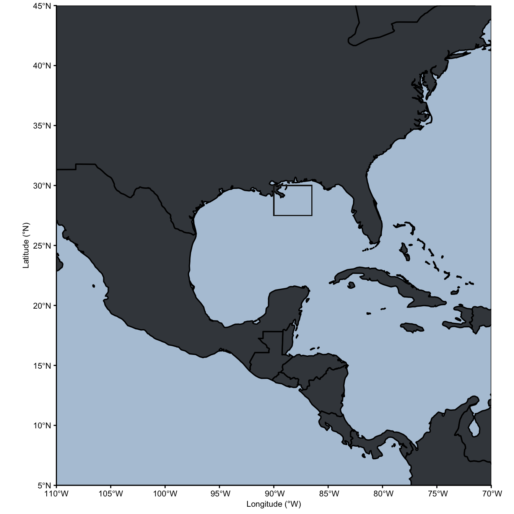
# MAP
INSET <- ggplot(data = world) +
geom_sf(color = "black", linewidth = 0.6, fill = "grey10", alpha = 0.8) +
# Set lat long region to show
coord_sf(xlim = c(-91, -85), ylim = c(27, 31), expand = FALSE) + # Larger region
# Add data points for stations
geom_point(data = surface_labels, aes(x = Longitude, y = Latitude), size = 5, shape = 21, color = "grey20", fill = "white") +
geom_text(data = surface_labels, aes(label = Station, x = Longitude, y = Latitude), size = 3) +
geom_rect(xmin = -90, xmax = -86.5, ymin = 27.5, ymax = 30, fill = NA, color = "grey10") + #inset
labs(y = "Latitude (°N)", x = "Longitude (°W)") +
scale_x_reverse() +
theme_classic() +
theme(legend.position = "none",
axis.text = element_text(size = 12, colour="black"),
axis.title = element_text(size = 12, colour="black"),
panel.background = element_rect(fill = "#B4C7D9"),
plot.background = element_blank(),
panel.border = element_rect(fill = NA))
INSETMap to save
# Left, bottom, right, top
INSET + inset_element(LARGE, 0.4, 0.4, 1.2, 1, align_to = "plot", clip = FALSE)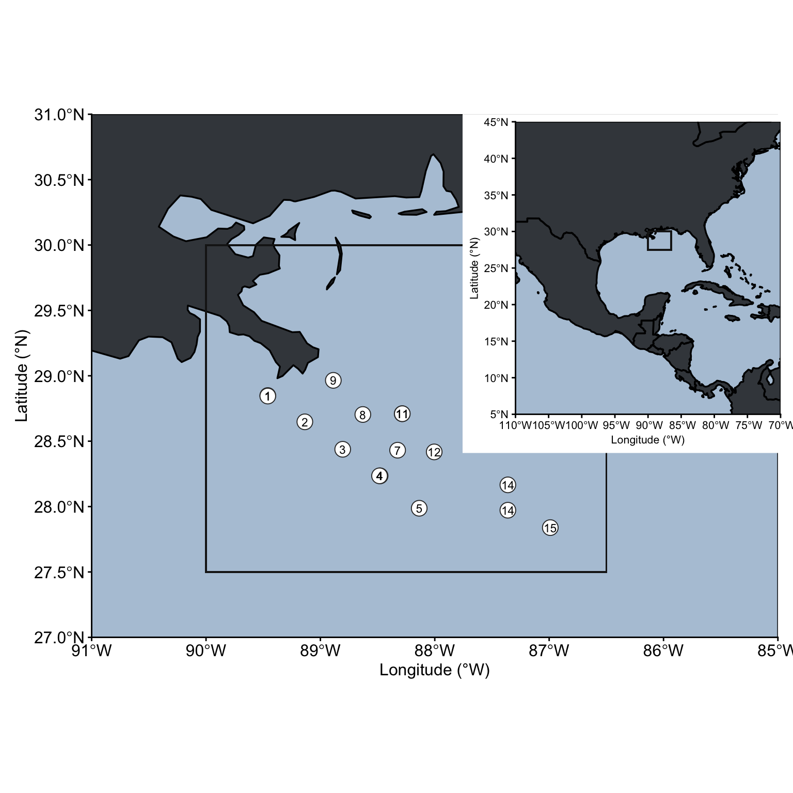
# ggsave("figures/map_overview.svg", width = 8, height = 8, device = "svg", limitsize = FALSE)8 ODV plots in R
Extract points you want and dimensions. Interpolate, subtract bathymetry if needed and move along from there.
# Manually extracted hexidecimal ODV colour palette
ODV_colours <- c("#b0020c", "#d31f2a", "#ffb300","#ffc000", "#75ab19","#27ab19", "#0db5e6", "#4626bd","#7139fe", "#aa24e0", "#d16cfa", "#d5a0eb")Station points and labels.
stn_labels <- env_metadata_mod %>%
filter(Station %in% stns_in_study) %>%
select(Station, Latitude, Longitude, Depth) %>% distinct() %>%
mutate(TRANSECT = case_when(
(Station < 6) ~ 1,
(Station > 5 & Station < 10) ~ 2,
(Station >= 10) ~ 3
))
# stn_labels
# max_stn_num <- max(stn_labels$Station)
stn_order_shore_offshore <- c(1, 2, 3, 4, 5, 9, 8, 7, 6, 10, 11, 12, 13, 15, 16, 17)
surf_labels <- stn_labels %>%
ungroup() %>%
filter(Depth < 5) %>%
select(Station, Latitude, Longitude) %>% distinct() %>%
mutate(TRANSECT = case_when(
(Station < 6) ~ 1,
(Station > 5 & Station < 10) ~ 2,
(Station >= 10) ~ 3
))Get surface profiles
surface_odv <- env_metadata_mod %>%
# Isolate the three transects we're interested in and cover the study area.
filter(Station < 18) %>%
mutate(TRANSECT = case_when(
(Station < 6) ~ 1,
(Station > 5 & Station < 10) ~ 2,
(Station >= 10) ~ 3
)) %>%
filter(Depth < 5 & Depth > 2) %>%
group_by(Station, Latitude, Longitude, ENV_VARIABLE, TRANSECT) %>%
summarise(SURFACE_VALUE = mean(value)) %>%
ungroup() %>%
pivot_wider(names_from = ENV_VARIABLE, values_from = SURFACE_VALUE)`summarise()` has grouped output by 'Station', 'Latitude', 'Longitude',
'ENV_VARIABLE'. You can override using the `.groups` argument.Get depth profiles
depth_odv <- env_metadata_mod %>%
# Isolate the three transects we're interested in and cover the study area.
filter(Station < 18) %>%
mutate(TRANSECT = case_when(
(Station < 6) ~ 1,
(Station > 5 & Station < 10) ~ 2,
(Station >= 10) ~ 3
)) %>%
group_by(Station, Latitude, Longitude, Depth, ENV_VARIABLE, TRANSECT) %>%
summarise(VALUE = mean(value)) %>%
ungroup() %>%
pivot_wider(names_from = ENV_VARIABLE, values_from = VALUE)`summarise()` has grouped output by 'Station', 'Latitude', 'Longitude',
'Depth', 'ENV_VARIABLE'. You can override using the `.groups` argument.8.1 Depth profiles
8.1.1 Temperature & Long
head(depth_odv)# A tibble: 6 × 15
Station Latitude Longitude Depth TRANSECT Fluorescence Oxygen Salinity
<int> <dbl> <dbl> <dbl> <dbl> <dbl> <dbl> <dbl>
1 1 28.8 89.5 2.48 1 4.09 NA NA
2 1 28.8 89.5 2.48 1 4.28 NA NA
3 1 28.8 89.5 2.56 1 4.16 NA NA
4 1 28.8 89.5 2.62 1 4.05 NA NA
5 1 28.8 89.5 18.6 1 0.437 NA NA
6 1 28.8 89.5 18.6 1 0.44 NA NA
# ℹ 7 more variables: Temperature <dbl>, NH4 <dbl>, NO2 <dbl>, NO3 <dbl>,
# PO4 <dbl>, SIL <dbl>, Prok_count <dbl>Non-interpolated scatterplot
depth_odv %>%
ggplot(aes(x = Longitude, y = Depth)) +
geom_point(aes(color = Temperature), size = 2) +
# geom_point(aes(color = PROK_COUNT), size = 2) +
scale_colour_gradientn(colours = rev(ODV_colours),
limits = c(2, 32)) +
labs(y = "Depth (m)", x = "Longitude (°W)", colour = "Temperature (°C)") +
scale_y_reverse() + scale_x_reverse() +
theme_classic()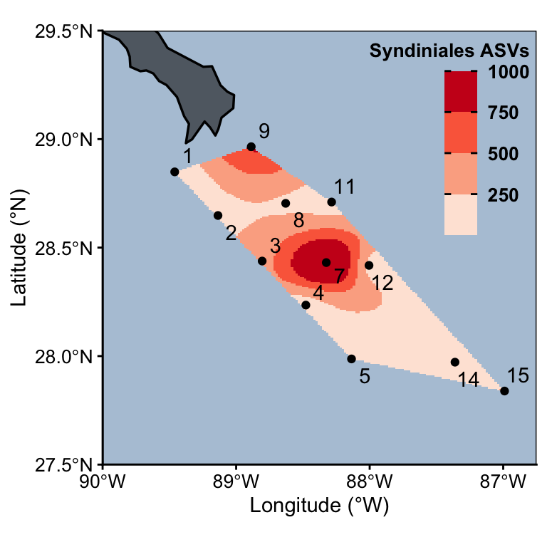
Interpolate step
library(MBA)
# ?mba.surf
head(depth_odv)# A tibble: 6 × 15
Station Latitude Longitude Depth TRANSECT Fluorescence Oxygen Salinity
<int> <dbl> <dbl> <dbl> <dbl> <dbl> <dbl> <dbl>
1 1 28.8 89.5 2.48 1 4.09 NA NA
2 1 28.8 89.5 2.48 1 4.28 NA NA
3 1 28.8 89.5 2.56 1 4.16 NA NA
4 1 28.8 89.5 2.62 1 4.05 NA NA
5 1 28.8 89.5 18.6 1 0.437 NA NA
6 1 28.8 89.5 18.6 1 0.44 NA NA
# ℹ 7 more variables: Temperature <dbl>, NH4 <dbl>, NO2 <dbl>, NO3 <dbl>,
# PO4 <dbl>, SIL <dbl>, Prok_count <dbl># Interpolate
temp_mba <- mba.surf(depth_odv[c("Longitude", "Depth", "Temperature")], no.X = 300, no.Y = 300, extend = T)X, y, z are Longitude”, “DEPTH”, “TEMP”
dimnames(temp_mba$xyz.est$z) <- list(temp_mba$xyz.est$x, temp_mba$xyz.est$y)
# head(temp_mba)
temp_interpol <- reshape2::melt(temp_mba$xyz.est$z, varnames = c('LONGITUDE', 'DEPTH'), value.name = 'TEMPERATURE') %>%
filter(DEPTH > 0) %>%
mutate(TEMPERATURE = round(TEMPERATURE, 1))ggplot(data = temp_interpol, aes(x = LONGITUDE, y = DEPTH)) +
geom_raster(aes(fill = TEMPERATURE)) +
geom_contour(aes(z = TEMPERATURE), binwidth = 2, colour = "black", alpha = 0.2) +
geom_contour(aes(z = TEMPERATURE), breaks = 20, colour = "black") +
scale_fill_gradientn(colours = rev(ODV_colours),
limits = c(2, 32)) +
labs(y = "Depth (m)", x = "Longitude (°W)") +
scale_y_reverse() + scale_x_reverse() +
theme_classic() +
coord_cartesian(expand = F)Warning in min(x): no non-missing arguments to min; returning InfWarning in max(x): no non-missing arguments to max; returning -InfWarning: Removed 90000 rows containing non-finite outside the scale range
(`stat_contour()`).Warning in min(x): no non-missing arguments to min; returning InfWarning in max(x): no non-missing arguments to max; returning -InfWarning: Removed 90000 rows containing non-finite outside the scale range
(`stat_contour()`).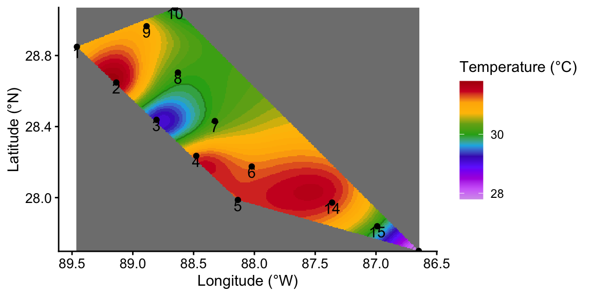
8.1.2 Surface params, lat, long
head(surface_odv)# A tibble: 6 × 14
Station Latitude Longitude TRANSECT Fluorescence NH4 NO2 NO3 Oxygen
<int> <dbl> <dbl> <dbl> <dbl> <dbl> <dbl> <dbl> <dbl>
1 1 28.8 89.5 1 4.15 NA NA NA NA
2 1 28.8 89.5 1 NA 0.75 0.38 0.23 3.16
3 2 28.6 89.1 1 0.312 0.8 0 0.05 3.74
4 3 28.4 88.8 1 0.0155 0.17 0 0.02 2.82
5 4 28.2 88.5 1 NA 0.31 0 0 3.47
6 4 28.2 88.5 1 0.032 NA NA NA NA
# ℹ 5 more variables: PO4 <dbl>, SIL <dbl>, Salinity <dbl>, Temperature <dbl>,
# Prok_count <dbl>Non-interpolated scatterplot
surface_odv %>%
ggplot(aes(x = Longitude, y = Latitude)) +
geom_point(aes(color = Temperature), size = 3) +
scale_colour_gradientn(colours = rev(ODV_colours)) +
labs(y = "Latitude (°N)", x = "Longitude (°W)", colour = "Temperature (°C)") +
scale_x_reverse() +
theme_classic()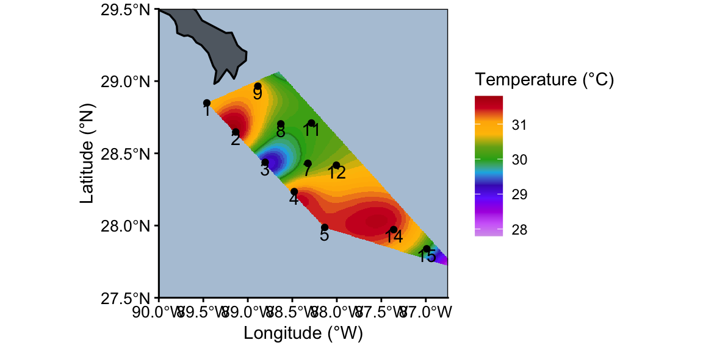
Interpolate step
library(MBA)
# ?mba.surf
head(surface_odv)# A tibble: 6 × 14
Station Latitude Longitude TRANSECT Fluorescence NH4 NO2 NO3 Oxygen
<int> <dbl> <dbl> <dbl> <dbl> <dbl> <dbl> <dbl> <dbl>
1 1 28.8 89.5 1 4.15 NA NA NA NA
2 1 28.8 89.5 1 NA 0.75 0.38 0.23 3.16
3 2 28.6 89.1 1 0.312 0.8 0 0.05 3.74
4 3 28.4 88.8 1 0.0155 0.17 0 0.02 2.82
5 4 28.2 88.5 1 NA 0.31 0 0 3.47
6 4 28.2 88.5 1 0.032 NA NA NA NA
# ℹ 5 more variables: PO4 <dbl>, SIL <dbl>, Salinity <dbl>, Temperature <dbl>,
# Prok_count <dbl># Interpolate
temp_mba <- mba.surf(surface_odv[c("Longitude", "Latitude", "Temperature")],
no.X = 300, no.Y = 300, extend = F)X, y, z are Longitude”, “DEPTH”, “TEMP”
dimnames(temp_mba$xyz.est$z) <- list(temp_mba$xyz.est$x, temp_mba$xyz.est$y)
# head(temp_mba)
#
temp_surface_interpol <- reshape2::melt(temp_mba$xyz.est$z, varnames = c("Longitude", "Latitude"), value.name = 'TEMPERATURE') %>%
mutate(TEMPERATURE = round(TEMPERATURE, 1))
head(temp_surface_interpol) Longitude Latitude TEMPERATURE
1 86.99000 27.839 NaN
2 86.99826 27.839 NA
3 87.00652 27.839 NA
4 87.01478 27.839 NA
5 87.02304 27.839 NA
6 87.03130 27.839 NAsurface_temperature <- temp_surface_interpol %>%
ggplot(aes(x = Longitude, y = Latitude)) +
geom_raster(aes(fill = TEMPERATURE)) +
geom_contour(aes(z = TEMPERATURE), binwidth = 2, colour = "black", alpha = 0.2) +
geom_contour(aes(z = TEMPERATURE), breaks = 20, colour = "black") +
# Add data points
geom_point(data = surface_odv, aes(x = Longitude, y = Latitude)) +
# ggrepel::geom_text_repel(data = surf_labels, aes(x = Longitude, y = Latitude, label = Station), box.padding = 0.1) +
geom_text(data = surface_odv, aes(x = Longitude, y = Latitude, label = Station),
position = position_dodge(width = 0.3),
hjust = 0.5, vjust = 1, color= "black") +
scale_fill_gradientn(colours = rev(ODV_colours),
breaks = c(24, 26, 28, 30, 32)) +
labs(y = "Latitude (°N)", x = "Longitude (°W)", fill = "Temperature (°C)") +
scale_x_reverse() +
theme_classic() +
coord_cartesian(expand = F) +
theme(axis.text = element_text(size = 10, colour="black"))
surface_temperature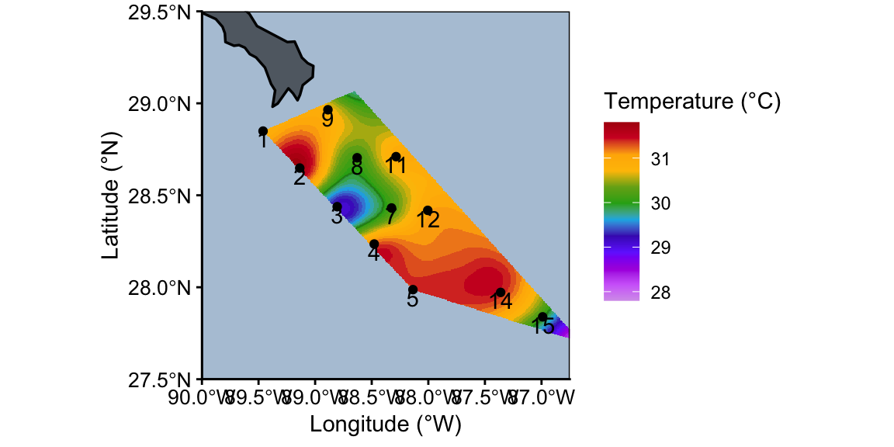
Temperature with map
# MAP
ggplot(data = (world %>% filter(subunit == "United States"))) +
geom_sf(color = "black", linewidth = 0.6, fill = "grey10", alpha = 0.6) +
# Set lat long region to show:
coord_sf(xlim = c(-90, -86.75), ylim = c(27.5, 29.5), expand = FALSE) +
# Overlay with temperature
geom_raster(data = temp_surface_interpol, aes(fill = TEMPERATURE, x = Longitude, y = Latitude)) +
geom_contour(data = temp_surface_interpol, aes(z = TEMPERATURE, x = Longitude, y = Latitude), binwidth = 2, colour = "black", alpha = 0.2) +
geom_contour(data = temp_surface_interpol, aes(z = TEMPERATURE,x = Longitude, y = Latitude), breaks = 20, colour = "black") +
# Add data points for stations
geom_point(data = surface_odv, aes(x = Longitude, y = Latitude)) +
ggrepel::geom_label_repel(data = surf_labels, aes(x = Longitude, y = Latitude, label = Station)) +
# geom_text(data = surface_odv, aes(x = Longitude, y = Latitude, label = Station), position = position_dodge(width = 0.1),
# hjust = 0.5, vjust = 1, color= "black") +
scale_fill_gradientn(colours = rev(ODV_colours), na.value=NA) +
labs(y = "Latitude (°N)", x = "Longitude (°W)", fill = "Temperature (°C)") +
scale_x_reverse() +
theme_classic() +
theme(axis.text = element_text(size = 10, colour="black"),
panel.background = element_rect(fill = "#B4C7D9"),
panel.border = element_rect(fill = NA),
aspect.ratio = 1)Warning in min(x): no non-missing arguments to min; returning InfWarning in max(x): no non-missing arguments to max; returning -InfWarning: Removed 90000 rows containing non-finite outside the scale range
(`stat_contour()`).Warning in min(x): no non-missing arguments to min; returning InfWarning in max(x): no non-missing arguments to max; returning -InfWarning: Removed 90000 rows containing non-finite outside the scale range
(`stat_contour()`).Warning: Removed 90000 rows containing missing values or values outside the scale range
(`geom_raster()`).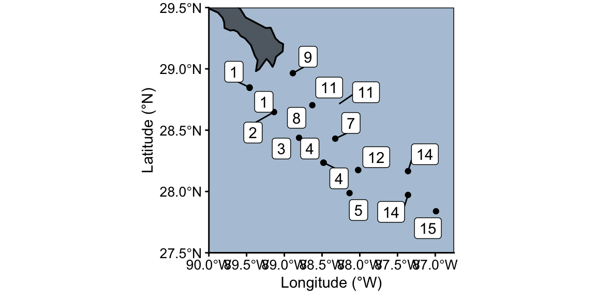
Temperature Surface
# MAP
ggplot(data = (world %>% filter(subunit == "United States"))) +
geom_sf(color = "black", linewidth = 0.6, fill = "grey10", alpha = 0.6) +
# Set lat long region to show:
coord_sf(xlim = c(-90, -86.75), ylim = c(27.5, 29.5), expand = FALSE) +
# Overlay with temperature
geom_raster(data = temp_surface_interpol, aes(fill = TEMPERATURE, x = Longitude, y = Latitude)) +
geom_contour(data = temp_surface_interpol, aes(z = TEMPERATURE, x = Longitude, y = Latitude), binwidth = 2, colour = "black", alpha = 0.2) +
geom_contour(data = temp_surface_interpol, aes(z = TEMPERATURE,x = Longitude, y = Latitude), breaks = 20, colour = "black") +
# Add data points for stations
geom_point(data = surf_labels, aes(x = Longitude, y = Latitude)) +
geom_text(data = surf_labels, aes(x = Longitude, y = Latitude, label = Station), position = position_dodge(width = 0.1),
hjust = 0.5, vjust = 1, color= "black") +
scale_fill_gradientn(colours = rev(ODV_colours), na.value=NA) +
labs(y = "Latitude (°N)", x = "Longitude (°W)", fill = "Temperature (°C)") +
scale_x_reverse() +
theme_classic() +
theme(axis.text = element_text(size = 10, colour="black"),
panel.background = element_rect(fill = "#B4C7D9"),
panel.border = element_rect(fill = NA),
aspect.ratio = 1)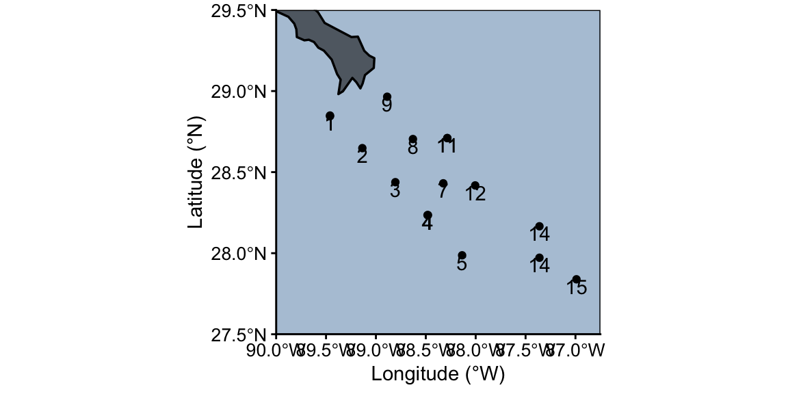
8.2 Fxn for surface params, lat, long
Set up a data frame with all parameters as columns.
set.seed(123)
# Put PARAM in quotes
#limits = c(2, 32)
interpolate_lat_long_env <- function(df, PARAM, min, max, TITLE){
# Interpolate
output_mba <- mba.surf(df[c("Longitude", "Latitude", PARAM)],
no.X = 300, no.Y = 300, extend = F)
# Extract interpolated values
dimnames(output_mba$xyz.est$z) <- list(output_mba$xyz.est$x, output_mba$xyz.est$y)
#
envs_interpol <- reshape2::melt(output_mba$xyz.est$z,
varnames = c("Longitude", "Latitude"),
value.name = PARAM) %>%
select(Longitude, Latitude, VALUE = !!PARAM) %>%
mutate(VALUE = round(VALUE, 1))
# MAP
ggplot(data = (world %>% filter(subunit == "United States"))) +
geom_sf(color = "black", linewidth = 0.6, fill = "grey10", alpha = 0.6) +
# Set lat long region to show:
coord_sf(xlim = c(-90, -86.75), ylim = c(27.5, 29.5), expand = FALSE) +
# Overlay with temperature
geom_raster(data = envs_interpol, aes(fill = VALUE, x = Longitude, y = Latitude)) +
geom_contour(data = envs_interpol, aes(z = VALUE, x = Longitude, y = Latitude), binwidth = 2, colour = "black", alpha = 0.2) +
geom_contour(data = envs_interpol, aes(z = VALUE,x = Longitude, y = Latitude), breaks = 20, colour = "black") +
# Add data points for stations
geom_point(data = surf_labels, aes(x = Longitude, y = Latitude)) +
ggrepel::geom_text_repel(data = surf_labels,
aes(x = Longitude, y = Latitude, label = Station),
direction = "y", nudge_x = 0.1, nudge_y = 0) +
scale_fill_gradientn(colours = rev(ODV_colours),
na.value = NA,
limits = c(min, max)) +
labs(y = "Latitude (°N)", x = "Longitude (°W)", fill = TITLE) +
scale_x_reverse() +
theme_classic() +
theme(axis.text = element_text(size = 10, colour="black"),
panel.background = element_rect(fill = "#B4C7D9"),
panel.border = element_rect(fill = NA),
aspect.ratio = 1,
legend.background = element_blank(),
legend.text = element_text(size = 10, colour="black", face = "bold"),
legend.title = element_text(size = 10, colour="black", face = "bold", hjust = 1, vjust = 1),
legend.ticks = element_line(color = "black"),
legend.position=c(0.83,.75))
}
# interpolate_lat_long_env(surface_odv, "SURFACE_TEMP", "Temperature (°C)")
colnames(surface_odv) [1] "Station" "Latitude" "Longitude" "TRANSECT" "Fluorescence"
[6] "NH4" "NO2" "NO3" "Oxygen" "PO4"
[11] "SIL" "Salinity" "Temperature" "Prok_count" Parameters to use in function: “NH4” “NO2” “NO3” “Oxygen”
[9] “PO4” “SIL” “Salinity” “Temperature”
# TEMP: 2,32 (18, 32)
# Salinity: 30, 38 (25, 37)
# o2: 2, 5
surf_temp <- (interpolate_lat_long_env(surface_odv, "Temperature", 25, 32,
"Temperature (°C)")); surf_temp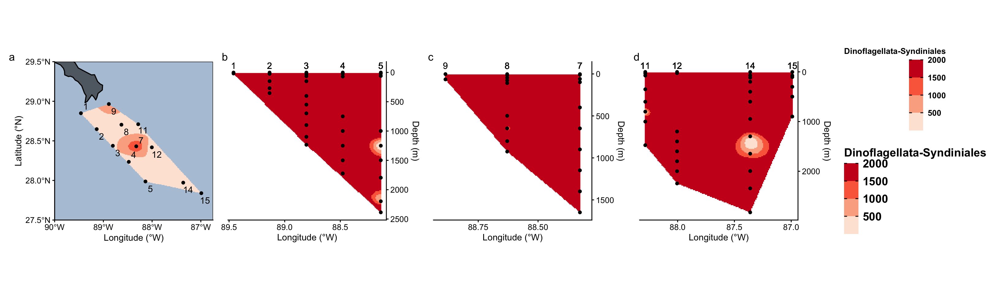
surf_sal <- interpolate_lat_long_env(surface_odv, "Salinity", 25, 37, "Salinity"); surf_sal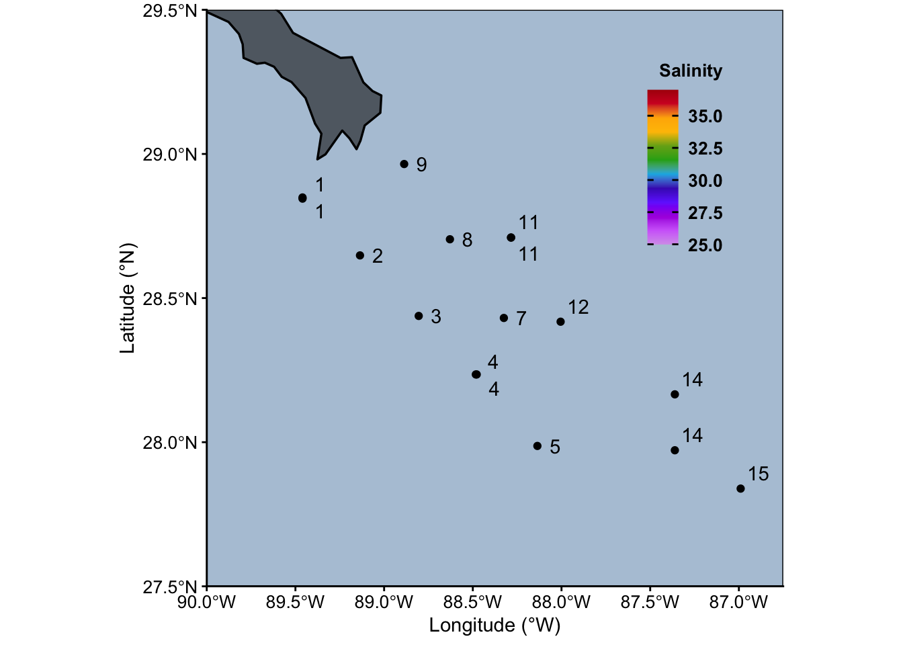
surf_oxy <- interpolate_lat_long_env(surface_odv, "Oxygen", 2, 5, (expression(bold(O[2]*" "*"ml/L")))); surf_oxynow: “NH4” “NO2” “NO3” “PO4” “SIL”
# expression("S"["in"] ~ "[W" ~ m^-2~"]")
# NH4: 0, 1.5
# NO3: 0, 30
# NO2: 0, 0.5
# PO4: 0, 2
# Sio: 2, 25 (0,15)
surf_nh4 <- interpolate_lat_long_env(surface_odv, "NH4",0, 1.5, expression(bold("NH"["4"]*" µmol/L")))
surf_no2 <- interpolate_lat_long_env(surface_odv, "NO2", 0, 0.5, expression(bold("NO"["2"]*" µmol/L")))
surf_no3 <- interpolate_lat_long_env(surface_odv, "NO3", 0, 30, expression(bold("NO"["3"]*" µmol/L")))
surf_po4 <- interpolate_lat_long_env(surface_odv, "PO4", 0, 2, expression(bold("PO"["4"]*" µmol/L")))
surf_sil <- interpolate_lat_long_env(surface_odv, "SIL", 0, 15, expression(bold("SiO" ["4"] ^"2-"*" µmol/L"))); surf_sil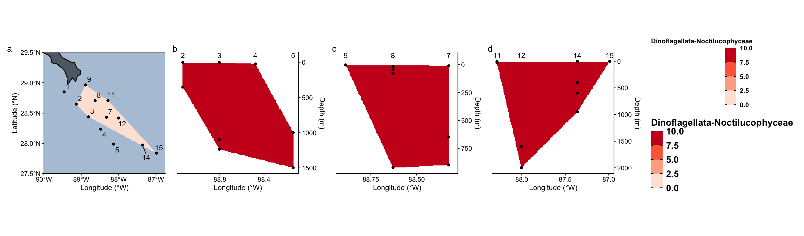
8.2.1 Compile all surface plots
surf_temp + surf_sal + surf_oxy + surf_sil + surf_nh4 + surf_no3 + surf_no2 + surf_po4 + plot_layout(ncol = 4) + plot_annotation(tag_levels = "A")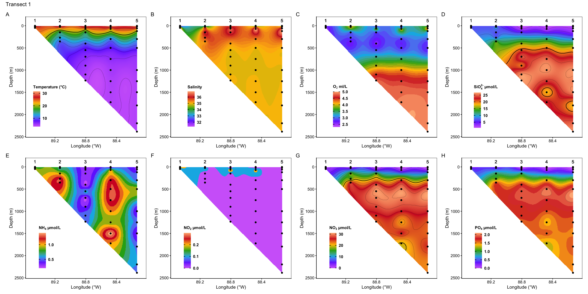
# ?plot_annotation8.3 Fxn for depth parameters
# df_all <- depth_odv
# transect <- "transect1"
# PARAM <- "TEMP"
# PARAM
# as.name(PARAM)
# TITLE <- "Temperature"
# Put PARAM in quotes
interpolate_depth_long_env <- function(df_all, transect, PARAM, min, max, TITLE){
param <- as.name(PARAM)
# Isolate transect of interest
df <- df_all %>%
filter(TRANSECT == transect) %>%
select(Longitude, Depth, param) %>%
drop_na()
#
df_labels <- stn_labels %>%
filter(TRANSECT == transect)
#
# Get specific transect Longitude
max_long <- round(max(df$Longitude), 0) + 1
min_long <- round(min(df$Longitude), 0) - 1
#
# Interpolate
output_mba <- mba.surf(df[c("Longitude", "Depth", PARAM)],
no.X = 300, no.Y = 300, extend = F)
# Extract interpolated values
dimnames(output_mba$xyz.est$z) <- list(output_mba$xyz.est$x, output_mba$xyz.est$y)
#
envs_interpol <- reshape2::melt(output_mba$xyz.est$z,
varnames = c("Longitude", "Depth"),
value.name = PARAM) %>%
select(Longitude, Depth, VALUE = !!PARAM) %>%
mutate(VALUE = round(VALUE, 1)) %>%
filter(Longitude > min_long & Longitude < max_long)
#
# Plot
envs_interpol %>%
ggplot(aes(x = Longitude, y = Depth)) +
geom_raster(aes(fill = VALUE)) +
geom_contour(aes(z = VALUE), binwidth = 2, colour = "black", alpha = 0.2) +
geom_contour(aes(z = VALUE), breaks = 20, colour = "black") +
# Add data points
geom_point(data = df_labels, aes(x = Longitude, y = Depth)) +
geom_text(data = df_labels,
aes(x = Longitude, y = -80, label = Station),
position = position_dodge(width = 0.1),
hjust = 0.5, vjust = 0, color= "black") +
scale_fill_gradientn(colours = rev(ODV_colours),
na.value = NA,
limits = c(min, max)) +
labs(y = "Depth (m)", x = "Longitude (°W)", fill = TITLE) +
scale_x_reverse() + scale_y_reverse() +
theme_classic() +
theme(axis.text = element_text(size = 10, colour="black"),
panel.border = element_rect(fill = NA),
aspect.ratio = 1,
legend.background = element_blank(),
legend.text = element_text(size = 10, colour="black", face = "bold"),
legend.title = element_text(size = 10, colour="black", face = "bold", hjust = 0, vjust = 1),
legend.ticks = element_line(color = "black"),
legend.position=c(0.2,0.26))
}
# interpolate_depth_long_env(depth_odv, 1 ,"Temperature", "Temperature (°C)")colnames(depth_odv) [1] "Station" "Latitude" "Longitude" "Depth" "TRANSECT"
[6] "Fluorescence" "Oxygen" "Salinity" "Temperature" "NH4"
[11] "NO2" "NO3" "PO4" "SIL" "Prok_count" # unique(depth_odv$TRANSECT)8.3.1 Transect 1
# TEMP: depth: 2,32 surface: (18, 32)
# Salinity: 30, 38 (25, 37)
# o2: 2, 5
# Sio: 2, 25 (0,15)
# NH4: 0, 1.5
# NO3: 0, 30
# NO2: 0, 0.5
# PO4: 0, 2(interpolate_depth_long_env(depth_odv, 1, "Temperature", 2, 32,"Temperature (°C)")) +
(interpolate_depth_long_env(depth_odv, 1, "Salinity", 25, 37, "Salinity")) +
(interpolate_depth_long_env(depth_odv, 1, "Oxygen", 2, 5, (expression(bold(O[2]*" "*"ml/L"))))) +
(interpolate_depth_long_env(depth_odv, 1, "SIL", 1, 28, expression(bold("SiO" ["4"] ^"2-"*" µmol/L")))) +
#
(interpolate_depth_long_env(depth_odv, 1, "NH4", 0, 1.5, expression(bold("NH"["4"]*" µmol/L")))) +
(interpolate_depth_long_env(depth_odv, 1, "NO2", 0, 0.5, expression(bold("NO"["2"]*" µmol/L")))) +
(interpolate_depth_long_env(depth_odv, 1, "NO3", 0, 31, expression(bold("NO"["3"]*" µmol/L")))) +
(interpolate_depth_long_env(depth_odv, 1, "PO4", 0, 2.5, expression(bold("PO"["4"]*" µmol/L")))) +
plot_annotation(tag_levels = "A", title = "Transect 1") +
plot_layout(ncol = 4)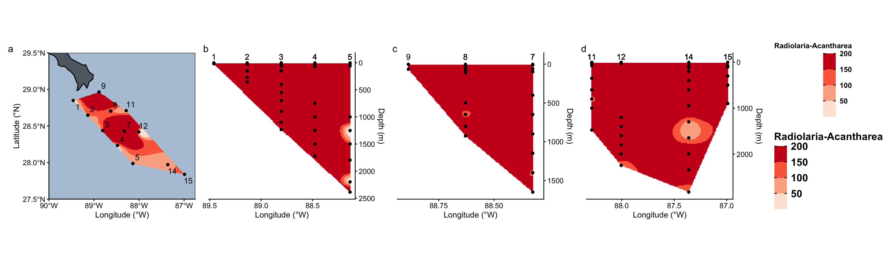
8.3.2 Transect 2
# (interpolate_depth_long_env(depth_odv, 2, "Temperature", "Temperature (°C)")) +
# (interpolate_depth_long_env(depth_odv, 2, "Salinity", "Salinity")) +
# (interpolate_depth_long_env(depth_odv, 2, "Oxygen", (expression(bold(O[2]*" "*"ml/L"))))) +
# (interpolate_depth_long_env(depth_odv, 2, "SIL", expression(bold("SiO" ["4"] ^"2-"*" µmol/L")))) +
# #
# (interpolate_depth_long_env(depth_odv, 2, "NH4", expression(bold("NH"["4"]*" µmol/L")))) +
# (interpolate_depth_long_env(depth_odv, 2, "NO2", expression(bold("NO"["2"]*" µmol/L")))) +
# (interpolate_depth_long_env(depth_odv, 2, "NO3", expression(bold("NO"["3"]*" µmol/L")))) +
# (interpolate_depth_long_env(depth_odv, 2, "PO4", expression(bold("PO"["4"]*" µmol/L")))) +
# plot_annotation(tag_levels = "A", title = "Transect 1") +
# plot_layout(ncol = 4)8.3.3 Transect 3
# (interpolate_depth_long_env(depth_odv, 3, "Temperature", "Temperature (°C)")) +
# (interpolate_depth_long_env(depth_odv, 3, "Salinity", "Salinity")) +
# (interpolate_depth_long_env(depth_odv, 3, "Oxygen", (expression(bold(O[2]*" "*"ml/L"))))) +
# (interpolate_depth_long_env(depth_odv, 3, "SIL", expression(bold("SiO" ["4"] ^"2-"*" µmol/L")))) +
# #
# (interpolate_depth_long_env(depth_odv, 3, "NH4", expression(bold("NH"["4"]*" µmol/L")))) +
# (interpolate_depth_long_env(depth_odv, 3, "NO2", expression(bold("NO"["2"]*" µmol/L")))) +
# (interpolate_depth_long_env(depth_odv, 3, "NO3", expression(bold("NO"["3"]*" µmol/L")))) +
# (interpolate_depth_long_env(depth_odv, 3, "PO4", expression(bold("PO"["4"]*" µmol/L")))) +
# plot_annotation(tag_levels = "A", title = "Transect 1") +
# plot_layout(ncol = 4)9 Compiled physical parameters
# TEMP: 2,32 (18, 32)
# Salinity: 30, 38 (25, 37)
# o2: 2, 5
# Sio: 2, 25 (0,15)
# NH4: 0, 1.5
# NO3: 0, 30
# NO2: 0, 0.5
# PO4: 0, 2# Temperature
surf_temp +
(interpolate_depth_long_env(depth_odv, 1, "Temperature", 2, 32, "Temperature (°C)")) +
(interpolate_depth_long_env(depth_odv, 2, "Temperature", 2, 32, "Temperature (°C)")) +
(interpolate_depth_long_env(depth_odv, 3, "Temperature", 2, 32, "Temperature (°C)")) +
surf_sal +
(interpolate_depth_long_env(depth_odv, 1, "Salinity", 25, 37, "Salinity")) +
(interpolate_depth_long_env(depth_odv, 2, "Salinity", 25, 37, "Salinity")) +
(interpolate_depth_long_env(depth_odv, 3, "Salinity", 25, 37, "Salinity")) +
surf_oxy +
(interpolate_depth_long_env(depth_odv, 1, "Oxygen", 2, 5, (expression(bold(O[2]*" "*"ml/L"))))) +
(interpolate_depth_long_env(depth_odv, 2, "Oxygen", 2, 5, (expression(bold(O[2]*" "*"ml/L"))))) +
(interpolate_depth_long_env(depth_odv, 3, "Oxygen", 2, 5, (expression(bold(O[2]*" "*"ml/L"))))) +
surf_sil +
(interpolate_depth_long_env(depth_odv, 1, "SIL", 1, 28, expression(bold("SiO" ["4"] ^"2-"*" µmol/L")))) +
(interpolate_depth_long_env(depth_odv, 2, "SIL", 1, 28, expression(bold("SiO" ["4"] ^"2-"*" µmol/L")))) +
(interpolate_depth_long_env(depth_odv, 3, "SIL", 1, 28, expression(bold("SiO" ["4"] ^"2-"*" µmol/L")))) +
plot_annotation(tag_levels = "a", title = "") +
plot_layout(ncol = 4)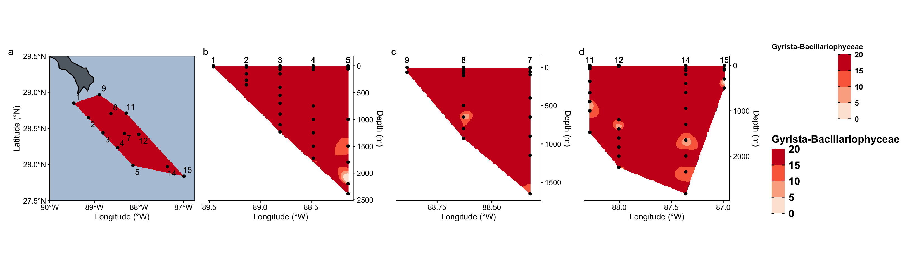
# ggsave("figures/env-profiles-all.svg", width = 20, height = 20, device = "svg", limitsize = FALSE) surf_nh4 +
(interpolate_depth_long_env(depth_odv, 1, "NH4", 0, 1.5, expression(bold("NH"["4"]*" µmol/L")))) +
(interpolate_depth_long_env(depth_odv, 2, "NH4", 0, 1.5,expression(bold("NH"["4"]*" µmol/L")))) +
(interpolate_depth_long_env(depth_odv, 3, "NH4", 0, 1.5,expression(bold("NH"["4"]*" µmol/L")))) +
#
surf_no3 +
(interpolate_depth_long_env(depth_odv, 1, "NO3", 0, 31, expression(bold("NO"["3"]*" µmol/L")))) +
(interpolate_depth_long_env(depth_odv, 2, "NO3", 0, 31, expression(bold("NO"["3"]*" µmol/L")))) +
(interpolate_depth_long_env(depth_odv, 3, "NO3", 0, 31, expression(bold("NO"["3"]*" µmol/L")))) +
#
surf_no2 +
(interpolate_depth_long_env(depth_odv, 1, "NO2", 0, 0.5, expression(bold("NO"["2"]*" µmol/L")))) +
(interpolate_depth_long_env(depth_odv, 2, "NO2", 0, 0.5, expression(bold("NO"["2"]*" µmol/L")))) +
(interpolate_depth_long_env(depth_odv, 3, "NO2", 0, 0.5, expression(bold("NO"["2"]*" µmol/L")))) +
#
surf_po4 +
(interpolate_depth_long_env(depth_odv, 1, "PO4", 0, 2.8, expression(bold("PO"["4"]*" µmol/L")))) +
(interpolate_depth_long_env(depth_odv, 2, "PO4", 0, 2.8, expression(bold("PO"["4"]*" µmol/L")))) +
(interpolate_depth_long_env(depth_odv, 3, "PO4", 0, 2.8, expression(bold("PO"["4"]*" µmol/L")))) +
#
plot_annotation(tag_levels = "a") +
plot_layout(ncol = 4)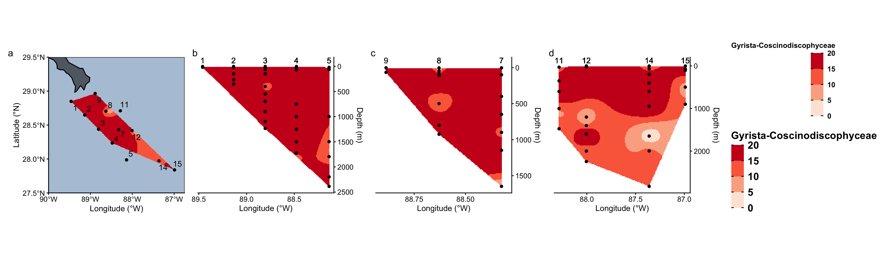
# ggsave("figures/nutrient-profiles-all.svg", width = 20, height = 20, device = "svg", limitsize = FALSE)10 ASVs on map
load("input-data/gulf-2023-sequence-analysis_10252025.RData", verbose = TRUE)Loading objects:
asv_long_wenv_wtax
tax_key
table1
env_metadata_toplot
asv_long_avg_wtaxhead(asv_long_avg_wtax)# A tibble: 6 × 37
FeatureID Taxon DIVISION SUPERGROUP_CLASS Supergroup_simplified Supergroup
<chr> <chr> <chr> <chr> <chr> <chr>
1 0001b2ea4223… Euka… Dinofla… Dinoflagellata-… TSAR-Dinoflagellata TSAR
2 0004be388d73… Euka… Dinofla… Dinoflagellata-… TSAR-Dinoflagellata TSAR
3 000761c7389a… Euka… Dinofla… Dinoflagellata-… TSAR-Dinoflagellata TSAR
4 000964551660… Euka… Radiola… Radiolaria-Acan… TSAR-Radiolaria TSAR
5 000964551660… Euka… Radiola… Radiolaria-Acan… TSAR-Radiolaria TSAR
6 000964551660… Euka… Radiola… Radiolaria-Acan… TSAR-Radiolaria TSAR
# ℹ 31 more variables: Division <chr>, Subdivision <chr>, Class <chr>,
# Order <chr>, Family <chr>, Genus <chr>, Species <chr>, STN_NISKIN <chr>,
# Station <int>, Niskin <int>, Depth <dbl>, depth_feature <chr>,
# Latitude <dbl>, Longitude <dbl>, Temperature <dbl>, Salinity <dbl>,
# Oxygen <dbl>, NH4 <dbl>, NO2 <dbl>, NO3 <dbl>, PO4 <dbl>, SIL <dbl>,
# Prok_count <dbl>, STN_CATEGORY_3 <chr>, STN_CATEGORY_4 <chr>,
# STN_ORDER <fct>, TRANSECT <fct>, DEPTH_ORDER <fct>, DIST_OUTFLOW <dbl>, …10.1 Surface ASV profiles
Surface lat/long
surface_asv_odv <- asv_long_avg_wtax %>%
# Isolate surface & average across replicates
filter(Depth < 5) %>%
ungroup() %>%
group_by(Station, Latitude, Longitude, TRANSECT) %>%
summarise(ASV_COUNT = n())`summarise()` has grouped output by 'Station', 'Latitude', 'Longitude'. You can
override using the `.groups` argument.Interpolate function for ASVs:
## Testing
# df <- surface_asv_odv
# PARAM <- "ASV_COUNT"
# TITLE <- "Total ASVs"
# ?mba.surf
# Put PARAM in quotes
interpolate_lat_long_asv <- function(df, PARAM, min, max, TITLE){
# Interpolate
output_mba <- mba.surf(df[c("Longitude", "Latitude", PARAM)],
no.X = 150, no.Y = 150, extend = F)
# Extract interpolated values
dimnames(output_mba$xyz.est$z) <- list(output_mba$xyz.est$x, output_mba$xyz.est$y)
#
envs_interpol <- reshape2::melt(output_mba$xyz.est$z,
varnames = c("Longitude", "Latitude"),
value.name = PARAM) %>%
select(Longitude, Latitude, VALUE = !!PARAM) %>%
mutate(VALUE = round(VALUE, 1))
head(envs_interpol)
# MAP
ggplot(data = (world %>% filter(subunit == "United States"))) +
geom_sf(color = "black", linewidth = 0.6, fill = "grey10", alpha = 0.6) +
# Set lat long region to show:
coord_sf(xlim = c(-90, -86.75), ylim = c(27.5, 29.5), expand = FALSE) +
# Overlay with temperature
geom_raster(data = envs_interpol, aes(fill = VALUE, x = Longitude, y = Latitude)) +
geom_contour(data = envs_interpol, aes(z = VALUE, x = Longitude, y = Latitude), binwidth = 2, colour = NA, alpha = 0.2) +
geom_contour(data = envs_interpol, aes(z = VALUE,x = Longitude, y = Latitude), breaks = 20, colour = NA) +
# Add data points for stations
ggrepel::geom_text_repel(data = surf_labels,
aes(x = Longitude, y = Latitude, label = Station),
direction = "y", nudge_x = 0.1, nudge_y = 0) +
geom_point(data = surf_labels, aes(x = Longitude, y = Latitude)) +
scale_fill_fermenter(type = "seq", palette = "Reds",
direction = 1, na.value = NA,
limits = c(min, max)) +
# scale_fill_gradientn(colours = rev(ODV_colours), na.value=NA) +
labs(y = "Latitude (°N)", x = "Longitude (°W)", fill = TITLE) +
scale_x_reverse() +
theme_classic() +
theme(axis.text = element_text(size = 10, colour="black"),
panel.background = element_rect(fill = "#B4C7D9"),
panel.border = element_rect(fill = NA),
aspect.ratio = 1,
legend.text = element_text(size = 10, colour="black", face = "bold"),
legend.background = element_blank(),
legend.title = element_text(size = 10, colour="black", face = "bold", hjust = 1, vjust = 1),
legend.ticks = element_line(color = "black"),
legend.position=c(0.78,.75))
}10.1.1 Total ASVs
surf_all_asv <- interpolate_lat_long_asv(surface_asv_odv, "ASV_COUNT", 1000, 3000, "Total ASVs")
surf_all_asv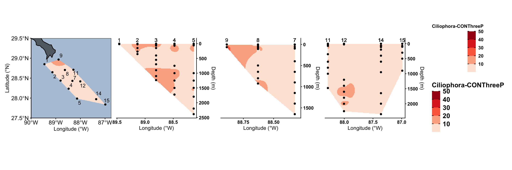
10.1.2 Taxa by ASVs
bytaxa_surface_asvs <- asv_long_avg_wtax %>%
# Isolate surface & average across replicates
filter(Depth < 5) %>%
ungroup() %>%
group_by(SUPERGROUP_CLASS, Station, Latitude, Longitude, TRANSECT) %>%
summarise(ASV_COUNT = n())`summarise()` has grouped output by 'SUPERGROUP_CLASS', 'Station', 'Latitude',
'Longitude'. You can override using the `.groups` argument.# Dinoflagellata-Syndiniales
interpolate_lat_long_asv((bytaxa_surface_asvs %>%
filter(SUPERGROUP_CLASS == "Dinoflagellata-Syndiniales")), "ASV_COUNT", 400, 1600, "Syndiniales ASVs")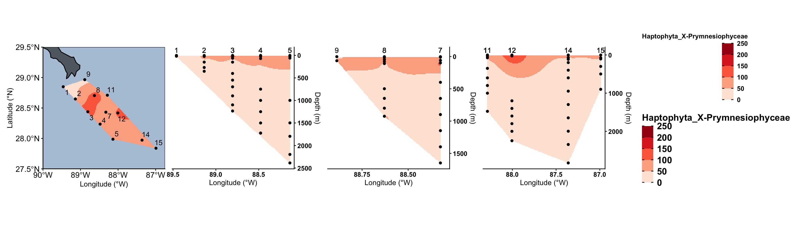
# unique(bytaxa_surface_asvs$SUPERGROUP_CLASS)
# Dinoflagellata-Syndiniales
interpolate_lat_long_asv((bytaxa_surface_asvs %>%
filter(SUPERGROUP_CLASS == "Gyrista-Bacillariophyceae")), "ASV_COUNT", 5, 25,"Diatom ASVs")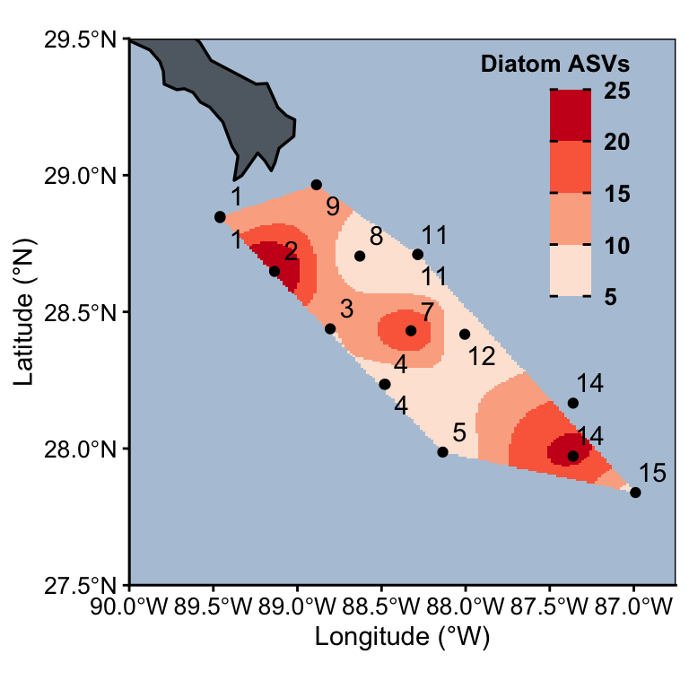
interpolate_lat_long_asv((bytaxa_surface_asvs %>%
filter(SUPERGROUP_CLASS == "Gyrista-Chrysophyceae")), "ASV_COUNT", 4, 16,"Chrysophyte ASVs")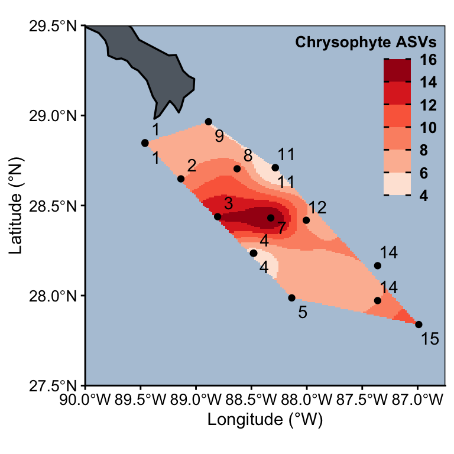
interpolate_lat_long_asv((bytaxa_surface_asvs %>%
filter(SUPERGROUP_CLASS == "Gyrista-Pelagophyceae")), "ASV_COUNT", 2, 10,"Pelagophyceae ASVs")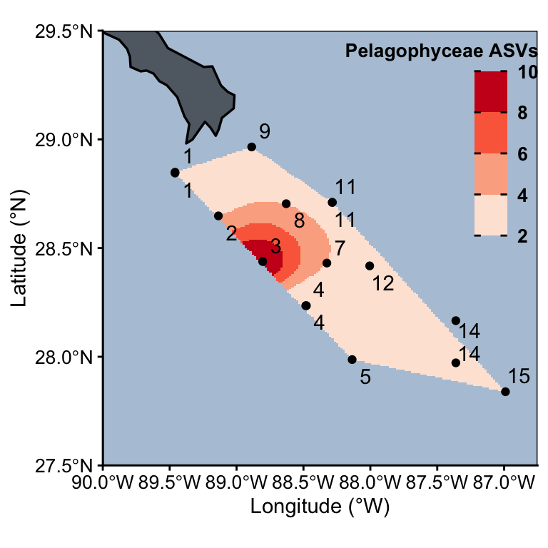
“Radiolaria-Polycystinea”
“Radiolaria-RAD”
“Radiolaria-Radiolaria”
interpolate_lat_long_asv((bytaxa_surface_asvs %>%
filter(SUPERGROUP_CLASS == "Radiolaria-Acantharea")), "ASV_COUNT", 0, 100, "Acantharea ASVs")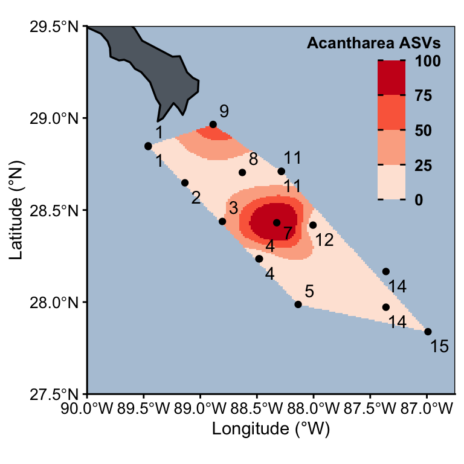
interpolate_lat_long_asv((bytaxa_surface_asvs %>%
filter(SUPERGROUP_CLASS == "Radiolaria-Polycystinea")), "ASV_COUNT", 0, 300, "Polycystinea ASVs")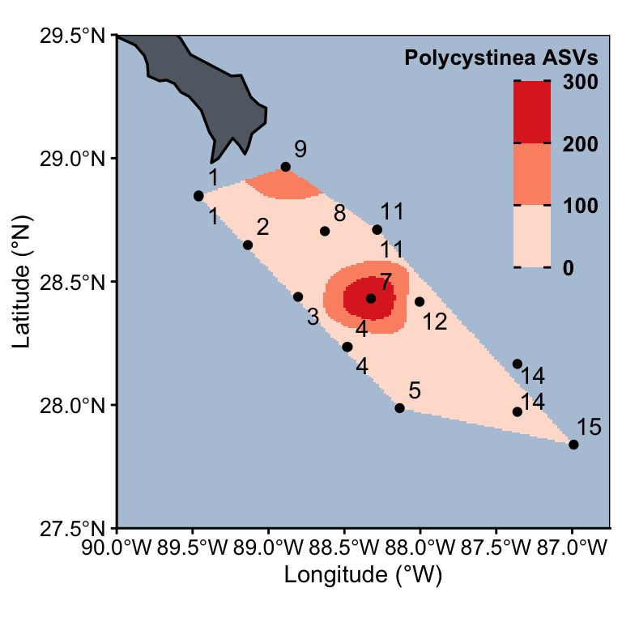
# interpolate_lat_long_asv((bytaxa_surface_asvs %>%
# filter(SUPERGROUP_CLASS == "Radiolaria-RAD")), "ASV_COUNT", 0, 10, "RAD ASVs")
# interpolate_lat_long_asv((bytaxa_surface_asvs %>%
# filter(SUPERGROUP_CLASS == "Radiolaria-Radiolaria")), "ASV_COUNT", "Radiolaria ASVs")10.2 Depth ASV profiles
depth_asv_odv <- asv_long_avg_wtax %>%
filter(!is.na(Latitude)) %>%
ungroup() %>%
group_by(Station, Latitude, Longitude, Depth, TRANSECT) %>%
summarise(ASV_COUNT = n())`summarise()` has grouped output by 'Station', 'Latitude', 'Longitude',
'Depth'. You can override using the `.groups` argument.head(depth_asv_odv)# A tibble: 6 × 6
# Groups: Station, Latitude, Longitude, Depth [6]
Station Latitude Longitude Depth TRANSECT ASV_COUNT
<int> <dbl> <dbl> <dbl> <fct> <int>
1 1 28.8 89.5 2.48 transect1 635
2 1 28.8 89.5 18.6 transect1 1908
3 2 28.6 89.1 2.9 transect1 1089
4 2 28.6 89.1 24.2 transect1 2396
5 2 28.6 89.1 150. transect1 2858
6 2 28.6 89.1 269. transect1 2279# unique(depth_asv_odv$TRANSECT)# Put PARAM in quotes
interpolate_depth_long_asv <- function(df_all, transect, PARAM, min, max, TITLE){
# Isolate transect of interest
df <- df_all %>%
filter(TRANSECT == transect)
#
# Get specific transect Longitude
max_long <- round(max(df$Longitude), 0) + 1
min_long <- round(min(df$Longitude), 0) - 1
#
# Interpolate
output_mba <- mba.surf(df[c("Longitude", "Depth", PARAM)],
no.X = 150, no.Y = 150, extend = F)
# Extract interpolated values
dimnames(output_mba$xyz.est$z) <- list(output_mba$xyz.est$x, output_mba$xyz.est$y)
#
envs_interpol <- reshape2::melt(output_mba$xyz.est$z,
varnames = c("Longitude", "Depth"),
value.name = PARAM) %>%
select(Longitude, Depth, VALUE = !!PARAM) %>%
mutate(VALUE = round(VALUE, 1)) %>%
filter(Longitude > min_long & Longitude < max_long)
#
# Plot
envs_interpol %>%
ggplot(aes(x = Longitude, y = Depth)) +
geom_raster(aes(fill = VALUE)) +
geom_contour(aes(z = VALUE), binwidth = 2, colour = NA, alpha = 0.2) +
geom_contour(aes(z = VALUE), breaks = 20, colour = NA) +
# Add data points
geom_point(data = df, aes(x = Longitude, y = Depth)) +
geom_text(data = df,
aes(x = Longitude, y = -60, label = df$Station),
position = position_dodge(width = 0.1),
hjust = 0.5, vjust = 0, color= "black") +
scale_fill_fermenter(type = "seq", palette = "Reds",
direction = 1, na.value = NA,
limits = c(min, max)) +
labs(y = "Depth (m)", x = "Longitude (°W)", fill = TITLE) +
scale_x_reverse() + scale_y_reverse() +
theme_classic() +
theme(axis.text = element_text(size = 10, colour="black"),
panel.border = element_blank(),
aspect.ratio = 1,
legend.background = element_blank(),
legend.text = element_text(size = 10, colour="black", face = "bold"),
legend.title = element_text(size = 10, colour="black", face = "bold", hjust = 0, vjust = 1),
axis.line = element_line(),
legend.ticks = element_line(color = "black"),
legend.position=c(0.2,0.35))
}
interpolate_depth_long_asv(depth_asv_odv, "transect1","ASV_COUNT", 1000, 3000,"Total ASVs")Warning: Removed 11110 rows containing non-finite outside the scale range
(`stat_contour()`).
Removed 11110 rows containing non-finite outside the scale range
(`stat_contour()`).Warning: `stat_contour()`: Zero contours were generatedWarning in min(x): no non-missing arguments to min; returning InfWarning in max(x): no non-missing arguments to max; returning -InfWarning: Removed 11110 rows containing missing values or values outside the scale range
(`geom_raster()`).Warning: Removed 224440 rows containing missing values or values outside the scale range
(`geom_contour()`).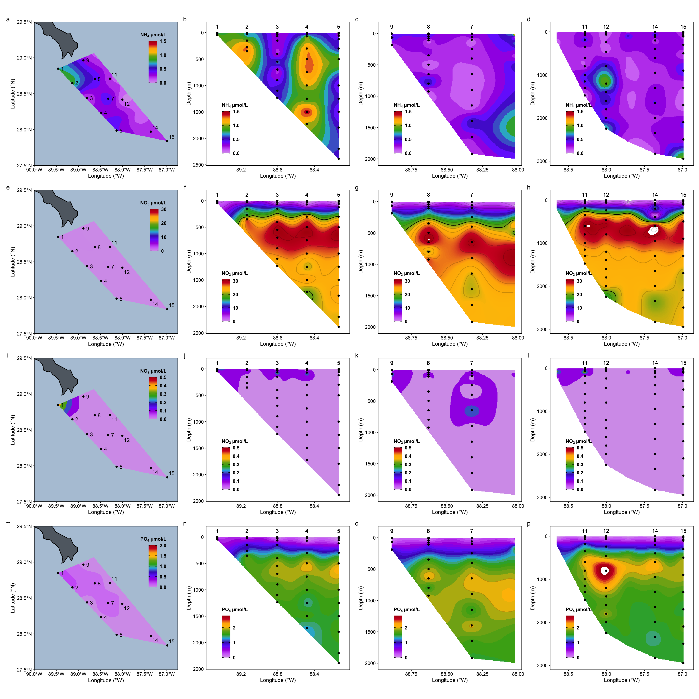
10.2.1 Total ASVs
interpolate_lat_long_asv(surface_asv_odv, "ASV_COUNT", 1000, 3000, "Total ASVs") +
interpolate_depth_long_asv(depth_asv_odv, "transect1","ASV_COUNT", 1000, 3000,"Total ASVs") +
interpolate_depth_long_asv(depth_asv_odv, "transect2","ASV_COUNT", 1000, 3000, "Total ASVs") +
interpolate_depth_long_asv(depth_asv_odv, "transect3","ASV_COUNT", 1000, 3000, "Total ASVs") +
plot_layout(nrow = 1) + plot_annotation(tag_levels = c("a"))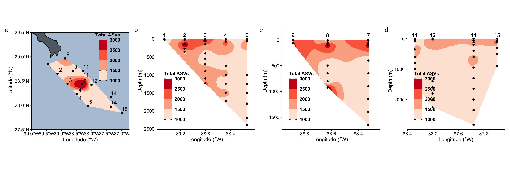
# ggsave("figures/asv-map-all.svg", width = 15, height = 5, device = "svg", limitsize = FALSE)10.2.2 Taxa by ASVs
bytaxa_depth_asvs <- asv_long_avg_wtax %>%
ungroup() %>%
group_by(SUPERGROUP_CLASS, Station, Latitude, Longitude, Depth, TRANSECT) %>%
summarise(ASV_COUNT = n())`summarise()` has grouped output by 'SUPERGROUP_CLASS', 'Station', 'Latitude',
'Longitude', 'Depth'. You can override using the `.groups` argument.# Dinoflagellata-Syndiniales
interpolate_depth_long_asv((bytaxa_depth_asvs %>%
filter(SUPERGROUP_CLASS == "Dinoflagellata-Syndiniales")),
"transect1", "ASV_COUNT",
100, 1500, "Syndiniales ASVs")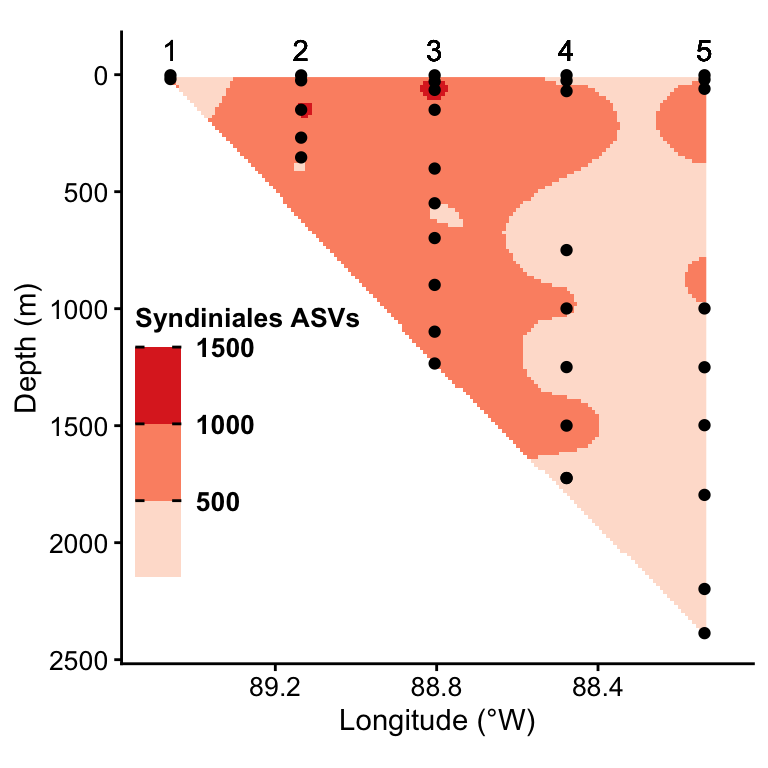
10.3 ASV profiles by taxa
# df_surf <- (bytaxa_surface_asvs %>%
# filter(SUPERGROUP_CLASS == "Dinoflagellata-Syndiniales"))
#
# df <- (bytaxa_depth_asvs %>%
# filter(SUPERGROUP_CLASS == "Dinoflagellata-Syndiniales"))tax_whole_asv_profile <- function(SUBSET, MIN, MAX, TITLE){
interpolate_lat_long_asv((bytaxa_surface_asvs %>%
filter(SUPERGROUP_CLASS == SUBSET)), "ASV_COUNT", MIN, MAX, TITLE) +
interpolate_depth_long_asv((bytaxa_depth_asvs %>%
filter(SUPERGROUP_CLASS == SUBSET)), "transect1","ASV_COUNT", MIN, MAX, TITLE) +
interpolate_depth_long_asv((bytaxa_depth_asvs %>%
filter(SUPERGROUP_CLASS == SUBSET)), "transect2","ASV_COUNT", MIN, MAX, TITLE) +
interpolate_depth_long_asv((bytaxa_depth_asvs %>%
filter(SUPERGROUP_CLASS == SUBSET)), "transect3","ASV_COUNT", MIN, MAX, TITLE) +
plot_layout(nrow = 1, guides = "collect") + plot_annotation(tag_levels = c("a"))
}10.4 Dinoflagellate ASV profiles
“Dinoflagellata-Syndiniales”
tax_whole_asv_profile("Dinoflagellata-Syndiniales", 100, 2000, "Dinoflagellata-Syndiniales")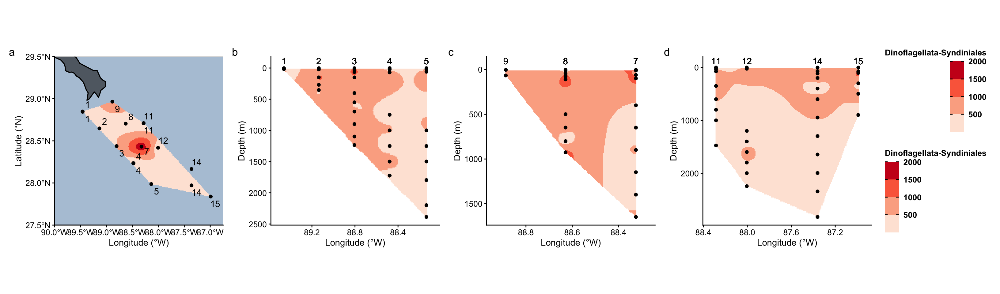
“Dinoflagellata-Noctilucophyceae”
# unique(bytaxa_surface_asvs$SUPERGROUP_CLASS)
tax_whole_asv_profile("Dinoflagellata-Noctilucophyceae", 0, 10, "Dinoflagellata-Noctilucophyceae")“Dinoflagellata-Dinophyceae”
# unique(bytaxa_surface_asvs$SUPERGROUP_CLASS)
tax_whole_asv_profile("Dinoflagellata-Dinophyceae", 50, 500, "Dinoflagellata-Dinophyceae")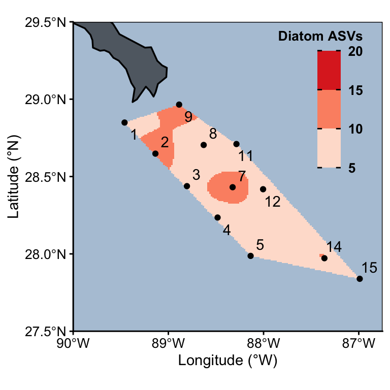
“Dinoflagellata-Dinophyta_X”
# unique(bytaxa_surface_asvs$SUPERGROUP_CLASS)
tax_whole_asv_profile("Dinoflagellata-Dinophyta_X", 0, 10, "Dinoflagellata-Dinophyta_X" )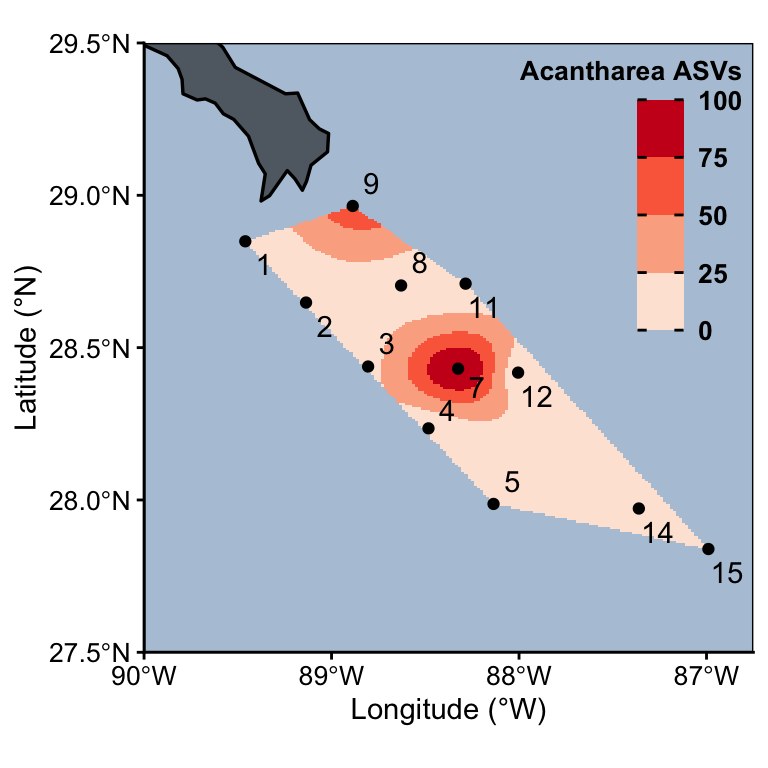
10.5 Radiolaria ASV profiles
# unique(bytaxa_surface_asvs$SUPERGROUP_CLASS)
colnames(asv_long_avg_wtax) [1] "FeatureID" "Taxon" "DIVISION"
[4] "SUPERGROUP_CLASS" "Supergroup_simplified" "Supergroup"
[7] "Division" "Subdivision" "Class"
[10] "Order" "Family" "Genus"
[13] "Species" "STN_NISKIN" "Station"
[16] "Niskin" "Depth" "depth_feature"
[19] "Latitude" "Longitude" "Temperature"
[22] "Salinity" "Oxygen" "NH4"
[25] "NO2" "NO3" "PO4"
[28] "SIL" "Prok_count" "STN_CATEGORY_3"
[31] "STN_CATEGORY_4" "STN_ORDER" "TRANSECT"
[34] "DEPTH_ORDER" "DIST_OUTFLOW" "DEPTH_BIN"
[37] "MEAN_REPS_seq" asv_long_avg_wtax %>%
filter(grepl("Radiolaria", SUPERGROUP_CLASS)) %>%
ungroup() %>%
group_by(SUPERGROUP_CLASS) %>%
summarise(ASV = n())# A tibble: 6 × 2
SUPERGROUP_CLASS ASV
<chr> <int>
1 Radiolaria-Acantharea 4213
2 Radiolaria-Polycystinea 10096
3 Radiolaria-RAD-A 950
4 Radiolaria-RAD-B 2925
5 Radiolaria-RAD-C 908
6 Radiolaria-Radiolaria_X 198“Radiolaria-Polycystinea”
tax_whole_asv_profile("Radiolaria-Polycystinea", 10, 200, "Radiolaria-Polycystinea")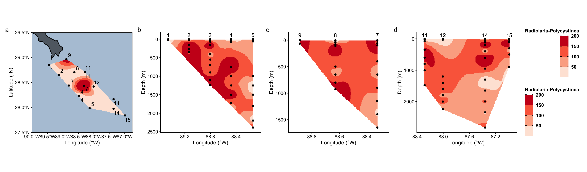
“Radiolaria-Acantharea”
tax_whole_asv_profile("Radiolaria-Acantharea", 10, 200, "Radiolaria-Acantharea")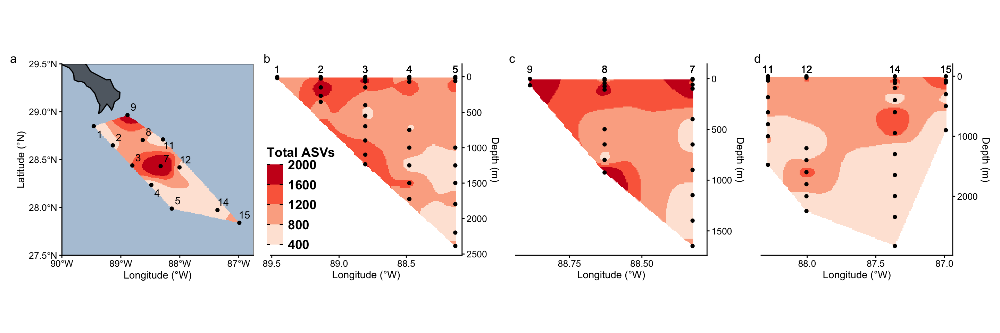
“Radiolaria-RAD-A” “Radiolaria-RAD-B” “Radiolaria-RAD-C”
tax_whole_asv_profile("Radiolaria-RAD-A", 10, 70, "Radiolaria-RAD-A")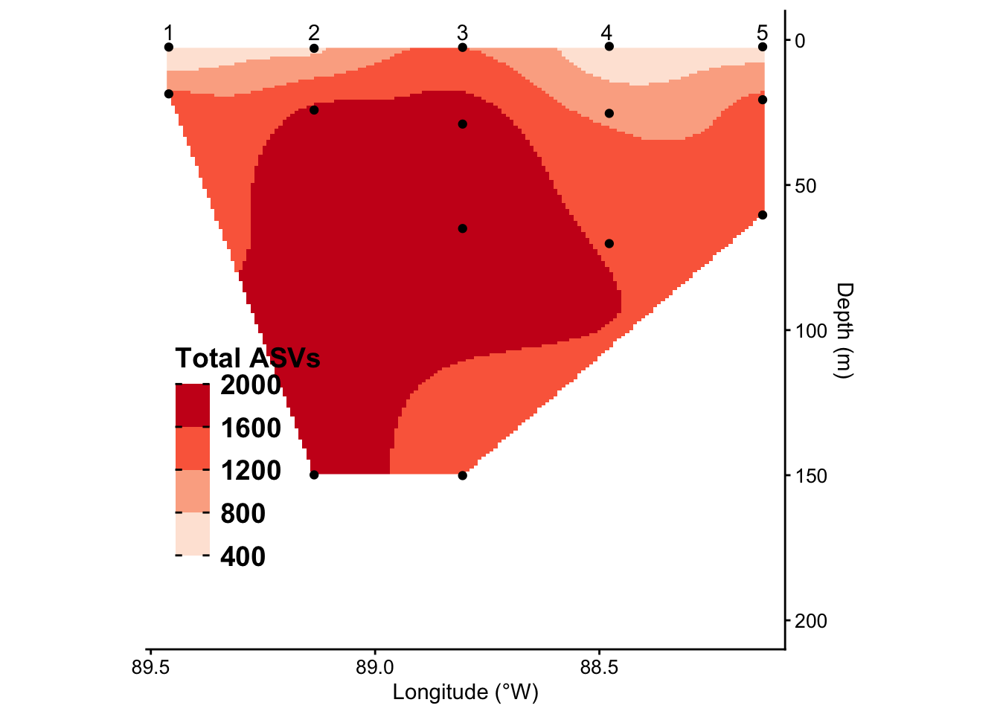
tax_whole_asv_profile("Radiolaria-RAD-B", 10, 70, "Radiolaria-RAD-B")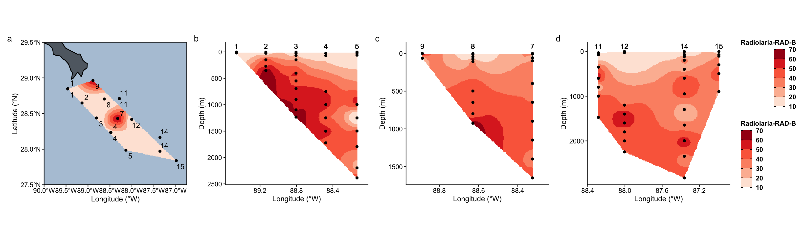
tax_whole_asv_profile("Radiolaria-RAD-C", 10, 70, "Radiolaria-RAD-C")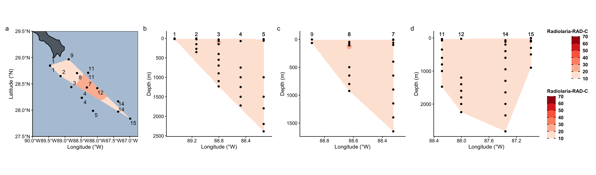
10.6 Gyrista ASV profiles
# unique(bytaxa_surface_asvs$SUPERGROUP_CLASS)
colnames(asv_long_avg_wtax) [1] "FeatureID" "Taxon" "DIVISION"
[4] "SUPERGROUP_CLASS" "Supergroup_simplified" "Supergroup"
[7] "Division" "Subdivision" "Class"
[10] "Order" "Family" "Genus"
[13] "Species" "STN_NISKIN" "Station"
[16] "Niskin" "Depth" "depth_feature"
[19] "Latitude" "Longitude" "Temperature"
[22] "Salinity" "Oxygen" "NH4"
[25] "NO2" "NO3" "PO4"
[28] "SIL" "Prok_count" "STN_CATEGORY_3"
[31] "STN_CATEGORY_4" "STN_ORDER" "TRANSECT"
[34] "DEPTH_ORDER" "DIST_OUTFLOW" "DEPTH_BIN"
[37] "MEAN_REPS_seq" asv_long_avg_wtax %>%
filter(grepl("Gyrista", SUPERGROUP_CLASS)) %>%
ungroup() %>%
group_by(SUPERGROUP_CLASS) %>%
summarise(ASV = n())# A tibble: 21 × 2
SUPERGROUP_CLASS ASV
<chr> <int>
1 Gyrista-Bacillariophyceae 787
2 Gyrista-Bolidophyceae 200
3 Gyrista-Chrysomerophyceae 3
4 Gyrista-Chrysophyceae 593
5 Gyrista-Coscinodiscophyceae 252
6 Gyrista-Developea 3
7 Gyrista-Dictyochophyceae 454
8 Gyrista-Eustigmatophyceae 62
9 Gyrista-Gyrista_X 618
10 Gyrista-Hyphochytriomyceta 66
# ℹ 11 more rows“Gyrista-Chrysophyceae”
tax_whole_asv_profile("Gyrista-Chrysophyceae", 0, 20, "Gyrista-Chrysophyceae")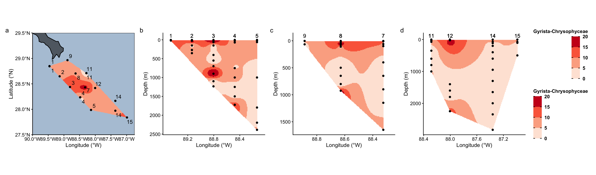
“Gyrista-Bacillariophyceae”
tax_whole_asv_profile("Gyrista-Bacillariophyceae", 0, 20, "Gyrista-Bacillariophyceae")“Gyrista-Coscinodiscophyceae”
tax_whole_asv_profile("Gyrista-Coscinodiscophyceae", 0, 20, "Gyrista-Coscinodiscophyceae")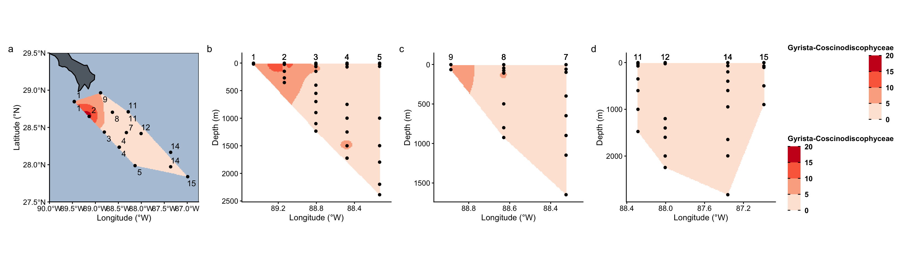
“Gyrista-Dictyochophyceae”
tax_whole_asv_profile("Gyrista-Dictyochophyceae", 0, 20, "Gyrista-Dictyochophyceae")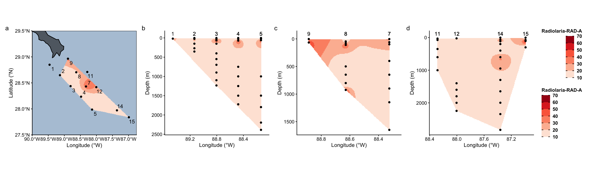
11 Session Information
sessionInfo()R version 4.5.2 (2025-10-31)
Platform: aarch64-apple-darwin20
Running under: macOS Sequoia 15.7.3
Matrix products: default
BLAS: /System/Library/Frameworks/Accelerate.framework/Versions/A/Frameworks/vecLib.framework/Versions/A/libBLAS.dylib
LAPACK: /Library/Frameworks/R.framework/Versions/4.5-arm64/Resources/lib/libRlapack.dylib; LAPACK version 3.12.1
locale:
[1] en_US.UTF-8/en_US.UTF-8/en_US.UTF-8/C/en_US.UTF-8/en_US.UTF-8
time zone: America/Chicago
tzcode source: internal
attached base packages:
[1] stats graphics grDevices utils datasets methods base
other attached packages:
[1] MBA_0.1-2 sf_1.0-21 rnaturalearthdata_1.0.0
[4] rnaturalearth_1.1.0 gsw_1.2-0 vegan_2.7-1
[7] permute_0.9-8 viridis_0.6.5 viridisLite_0.4.2
[10] plotly_4.11.0 gt_1.0.0 ggupset_0.4.1
[13] patchwork_1.3.2 compositions_2.0-9 decontam_1.28.0
[16] phyloseq_1.52.0 lubridate_1.9.4 forcats_1.0.0
[19] stringr_1.5.2 dplyr_1.1.4 purrr_1.1.0
[22] readr_2.1.5 tidyr_1.3.1 tibble_3.3.0
[25] ggplot2_4.0.0 tidyverse_2.0.0
loaded via a namespace (and not attached):
[1] DBI_1.2.3 gridExtra_2.3 rlang_1.1.6
[4] magrittr_2.0.4 ade4_1.7-23 e1071_1.7-16
[7] compiler_4.5.2 mgcv_1.9-3 vctrs_0.6.5
[10] reshape2_1.4.4 pkgconfig_2.0.3 crayon_1.5.3
[13] fastmap_1.2.0 XVector_0.48.0 labeling_0.4.3
[16] utf8_1.2.6 rmarkdown_2.29 tzdb_0.5.0
[19] UCSC.utils_1.4.0 xfun_0.53 GenomeInfoDb_1.44.3
[22] jsonlite_2.0.0 biomformat_1.36.0 rhdf5filters_1.20.0
[25] Rhdf5lib_1.30.0 parallel_4.5.2 cluster_2.1.8.1
[28] R6_2.6.1 stringi_1.8.7 RColorBrewer_1.1-3
[31] Rcpp_1.1.0 iterators_1.0.14 knitr_1.50
[34] IRanges_2.42.0 Matrix_1.7-4 splines_4.5.2
[37] igraph_2.1.4 timechange_0.3.0 tidyselect_1.2.1
[40] rstudioapi_0.17.1 yaml_2.3.10 codetools_0.2-20
[43] lattice_0.22-7 plyr_1.8.9 Biobase_2.68.0
[46] withr_3.0.2 S7_0.2.0 evaluate_1.0.5
[49] survival_3.8-3 isoband_0.2.7 units_0.8-7
[52] proxy_0.4-27 bayesm_3.1-6 xml2_1.4.0
[55] Biostrings_2.76.0 pillar_1.11.1 tensorA_0.36.2.1
[58] KernSmooth_2.23-26 foreach_1.5.2 stats4_4.5.2
[61] generics_0.1.4 S4Vectors_0.46.0 hms_1.1.3
[64] scales_1.4.0 class_7.3-23 glue_1.8.0
[67] lazyeval_0.2.2 tools_4.5.2 robustbase_0.99-6
[70] data.table_1.17.8 rhdf5_2.52.1 grid_4.5.2
[73] ape_5.8-1 colorspace_2.1-2 nlme_3.1-168
[76] GenomeInfoDbData_1.2.14 cli_3.6.5 gtable_0.3.6
[79] DEoptimR_1.1-4 digest_0.6.37 BiocGenerics_0.54.0
[82] classInt_0.4-11 ggrepel_0.9.6 htmlwidgets_1.6.4
[85] farver_2.1.2 htmltools_0.5.8.1 multtest_2.64.0
[88] lifecycle_1.0.4 httr_1.4.7 MASS_7.3-65